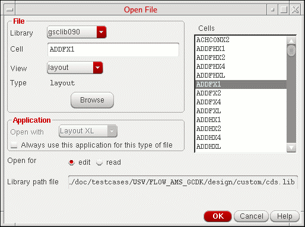

Starting Layout XL with an Automatic Physical Configuration View
If you do not need to use any of the features provided by the Configure Physical Hierarchy command, you should launch Layout XL in Automatic mode. This ensures that Layout XL handles all operations related to the physical configuration view automatically.
To start Layout XL from a schematic view with Automatic mode of physical configuration view:
-
From the CIW, choose File – Open.
The Open File form is displayed.

- Specify the Library and Cell names.
-
Select schematic from the View list and click OK.
The Virtuoso Schematic Editor L Editing window appears displaying the cellview you specified. -
From the schematic window, choose Launch – Layout XL.
Layout XL appears on the Launch menu only if the Layout XL software is installed. If you do not see Layout XL in the menu, check with your system administrator.
The Startup Option form is displayed.

- In the Layout group box, choose whether you want to create a new layout cellview or open an existing one.
-
In the Configuration group box, choose Automatic and then click OK.
One of the following happens:-
If you chose to create a new layout view, the New File form is displayed, with the default view name as
layout.
Choose a Library name and type the Cell and View names, and click OK to create the new cellview.
The software automatically creates the new layout cellview and looks for an existing physical configuration view called eitherphysConfigorphysConfig_schName, which might have been created in a previous Layout XL session or when converting data to use the IC 6.1 Layout XL schema. If neither view exists, it creates a new one calledphysConfigorphysConfig_schName. -
If you chose to open an existing layout view, the Open File form is displayed again.Specify the Library and Cell names, choose the View you want to open, and click OK to open the cellview.
In the form, you cannot change setting for the Open with option in the Application group box, regardless of the value set for the maskLayoutDefaultApp environment variable.
If there is an existing physical configuration view associated with the layout cellview, the software opens it in the background. If there is no existing physical configuration, the software creates a temporary, default one calledphysConfigorphysConfig_schName.
If the physical configuration view,physConfig, associated with a layout cellview is currently open and it is a temporary, default physical configuration view, then the physical configuration view cannot be accessed by any other user at the same time. Therefore, if another user wants to open the same design in read-only mode, another temporary physical configuration view,physConfig_2, gets created. Likewise, if a third user now wants to open the same design in read-only mode, another temporary physical configuration view,physConfig_3gets created. To conclude, for any incremental views of the same design that require the layout cellview to be opened in read-only mode, a new, temporary physical configuration view gets automatically generated and the name of each new physical configuration view increases incrementally.
-
If you chose to create a new layout view, the New File form is displayed, with the default view name as
The default Layout XL desktop configuration appears, displaying the schematic window, the layout window, the CIW, and the Palette assistant. The schematic view is re-opened in the context of the automatic physical configuration view, which might be different from the configuration it was using previously. The schematic window banner updates to indicate the name of the automatic physical configuration view. You might need to re-extract the schematic view to take into account the settings in the physical configuration view. The system prompts you if this extraction is required. To avoid the need for re-extracting the schematic view and to have the tool automatically copy the physConfig settings from the previous view, you must copy the cellview using the Library Manager.
The Configure Physical Hierarchy window is not displayed in Automatic mode. However, you can invoke it at any time by choosing Launch – Configure Physical Hierarchy from the layout window menu bar. Even in Automatic mode, you still need to use the Configure Physical Hierarchy window if you want to change the switch, stop, and constraint view lists, or make changes to component type for soft block definitions.
If Layout XL does not initialize and instead you see the Layout XL Constraint Group Setting dialog, see Layout XL Constraint Group.
Related Topics
Return to top